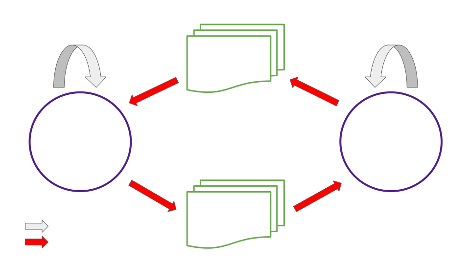
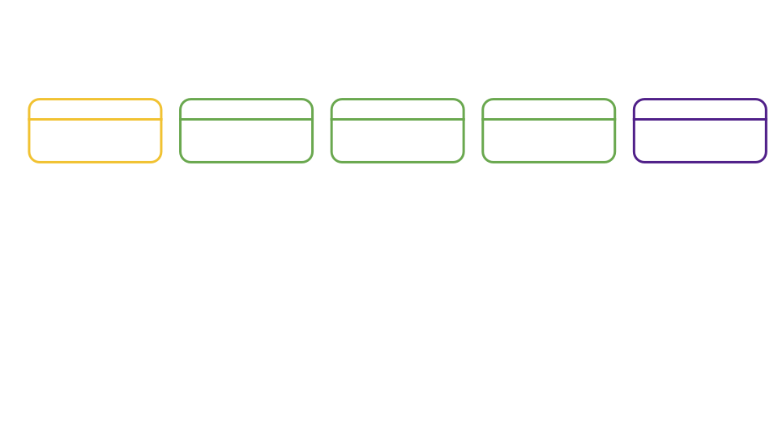

<!DOCTYPE html>
<html lang="en">

<head>
  <meta charset="utf-8" />
  <meta name="viewport" content="width=device-width, initial-scale=1.0, maximum-scale=1.0, user-scalable=no" />

  <title>Shallow Dive, Asynchronous Backing</title>
  <link rel="icon" href="./../../../assets/favicon.svg" />
  <link rel="shortcut icon" href="./../../../assets/favicon.png" />
  <link rel="stylesheet" href="./../../../dist/reset.css" />
  <link rel="stylesheet" href="./../../../dist/reveal.css" />
  <link rel="stylesheet" href="./../../.././assets/styles/PBA-theme.css" id="theme" />
  <link rel="stylesheet" href="./../../../css/highlight/shades-of-purple.css" />

  <link rel="stylesheet" href="./../../.././assets/styles/custom-classes.css" />

</head>

<body class="site">
  <header class="site-header">
    <!-- This logo is a link only on the watching server, not the production build -->
    <a href="">
      
    </a>
  </header>
  <main class="reveal">
    <article class="slides">
      <section  data-markdown><script type="text/template">

# Shallow Dive, Asynchronous Backing

<aside class="notes"><p>Hello again everyone</p>
<p>Today I&#39;ll be speaking to you about asynchronous backing, the new feature which delivers shorter parachain block times and an order of magnitude increase in quantity of Polkadot blockspace.</p>
<p>Lets get to it</p>
</aside></script></section><section  data-markdown><script type="text/template">
## Overview

<pba-flex center>

- Synchronous vs asynchronous
- Why is asynchronous backing desirable?
<!-- .element: class="fragment" data-fragment-index="1" -->
- High level mechanisms of async backing
<!-- .element: class="fragment" data-fragment-index="2" -->
- The unincluded segment, and prospective parachains
<!-- .element: class="fragment" data-fragment-index="3" -->
- Async backing enabling other roadmap items
<!-- .element: class="fragment" data-fragment-index="4" -->

</pba-flex>
</script></section><section  data-markdown><script type="text/template">
## Synchronous Backing Simplified


> How is this synchronous?

<!-- .element: class="fragment" data-fragment-index="1" -->

<aside class="notes"><ul>
<li>The dividing line between the left and right is when a candidate is backed on chain</li>
<li>Approvals, disputes, and finality don&#39;t immediately gate the production of farther candidates.
So we don&#39;t need to represent those steps in this model.</li>
</ul>
</aside></script></section><section  data-markdown><script type="text/template">
## Async Backing Simplified

<div class="r-stack">


<!-- .element: class="fragment" data-fragment-index="1" -->

<!-- .element: class="fragment" data-fragment-index="2" -->
</div>

> How is this asynchronous?

<!-- .element: class="fragment" data-fragment-index="3" -->

<aside class="notes"><ul>
<li>Our cache of parablock candidates allows us to pause just before that dividing line, on-chain backing</li>
<li>Why is backing asynchronous in this diagram?</li>
</ul>
</aside></script></section><section  data-markdown><script type="text/template">
## The Async Backing Optimistic Collator Assumptions

<pba-flex center>

1. "The best existing parablock I'm aware of will eventually be included in the relay chain."
1. "There won't be a chain reversion impacting that best parablock."
<!-- .element: class="fragment" data-fragment-index="1" -->

</pba-flex>

<br />
<br />

> The Stakes Are Low

<!-- .element: class="fragment" data-fragment-index="2" -->

<aside class="notes"><p>Best is determined by a process similar to the BABE fork choice rule.
Brief BABE fork choice rule review</p>
</aside></script></section><section  data-markdown><script type="text/template">
## Advantages of Asynchronous Backing

<pba-flex center>

1. 3-5x more extrinsics per block
1. Shorter parachain block times 6s vs 12s
<!-- .element: class="fragment" data-fragment-index="1" -->
1. Resulting 6-10x boost in quantity of blockspace
<!-- .element: class="fragment" data-fragment-index="2" -->
1. Fewer wasted parachain blocks
<!-- .element: class="fragment" data-fragment-index="3" -->

</pba-flex>

<aside class="notes"><ol>
<li>Collators have more time to fill each block</li>
<li>Advance work ensures backable candidates for each parachain are present to be backed on the relay chain every 6 seconds</li>
<li>Self explanatory</li>
<li>Allow parachain blocks to be ‘reused’ when they don’t make it onto the relay chain in the first attempt</li>
</ol>
</aside></script></section><section  data-markdown><script type="text/template">
## Parablock Validation Pipelining


</script></section><section  data-markdown><script type="text/template">
## Synchronous Backing, Another Look

<div class="r-stack">


<!-- .element: class="fragment" data-fragment-index="1" -->

<!-- .element: class="fragment" data-fragment-index="2" -->
</div>

<aside class="notes"><p>Image version 1:</p>
<ul>
<li>Now let&#39;s take a closer look at when each step of backing and inclusion takes place both with synchronous and asynchronous backing.</li>
</ul>
<p>Image version 3:</p>
<ul>
<li>Whole process is a cycle of duration 12 seconds (2 relay blocks).</li>
<li>No part of this cycle can be started for a second candidate of the same parachain until the first is included.</li>
</ul>
</aside></script></section><section  data-markdown><script type="text/template">
## Async Backing, Another Look

<div class="r-stack">


<!-- .element: class="fragment" data-fragment-index="1" -->

<!-- .element: class="fragment" data-fragment-index="2" -->
</div>

<aside class="notes"><p>Image version 1:</p>
<ul>
<li>Candidates stored in prospective parachains (detail on that later)</li>
</ul>
<p>Image version 2:</p>
<ul>
<li>Now we see our relay block cycle.</li>
<li>It is 6 seconds rather than 12.</li>
<li>It completes on-chain backing for one candidate and inclusion for another each cycle.</li>
</ul>
<p>Image version 3:</p>
<ul>
<li>Collation generation and off-chain backing are outside of the relay block cycle.</li>
<li>Because of this, collators have the freedom to work several blocks in advance. In practice, even working 2-3 blocks in advance gives a collator ample time to fully fill blocks (PoV size 5MiB)</li>
<li>Notice that a part of the collation generation context, the unincluded segment, comes from the collator itself.</li>
</ul>
</aside></script></section><section  data-markdown><script type="text/template">
## The Unincluded Segment

<pba-flex center>

- A parachain's record of all parablocks on a particular chain fork that have been produced but not yet included
- Used to apply limitations when constructing future blocks
<!-- .element: class="fragment" data-fragment-index="1" -->
- Lives in the parachain runtime
<!-- .element: class="fragment" data-fragment-index="2" -->
- Viewed from the perspective of a new parablock under construction
<!-- .element: class="fragment" data-fragment-index="3" -->

</pba-flex>

<aside class="notes"><p>Limitation example, upward messages remaining before the relay chain would have to drop incoming messages from our parachain</p>
</aside></script></section><section  data-markdown><script type="text/template">
## Unincluded Segment



<aside class="notes"><ul>
<li>Segment filled with ancestors from the perspective of a new candidate being built</li>
<li>Segment added to as each new block is imported into the parachain runtime</li>
<li>Segment shrinks when one of its ancestor blocks becomes included</li>
<li>Maximum unincluded segment capacity is set both on the parachain and relay chain</li>
</ul>
</aside></script></section><section  data-markdown><script type="text/template">
## Unincluded Segment


<aside class="notes"><p>UsedBandwidth:</p>
<ul>
<li>pub ump_msg_count: u32,</li>
<li>pub ump_total_bytes: u32,</li>
<li>pub hrmp_outgoing: BTreeMap&lt;ParaId, HrmpChannelUpdate&gt;,</li>
</ul>
</aside></script></section><section  data-markdown><script type="text/template">
## Prospective Parachains

<pba-flex center>

- The relay chain's record of all unincluded candidates on all chain forks from all parachains
- As if you folded all unincluded segments into one huge structure
<!-- .element: class="fragment" data-fragment-index="1" -->
- Used to store candidates and later provide them to the on-chain backing process
<!-- .element: class="fragment" data-fragment-index="2" -->
- Lives in the relay client (off chain)
<!-- .element: class="fragment" data-fragment-index="3" -->

</pba-flex>
</script></section><section  data-markdown><script type="text/template">
## Prospective Parachains Snapshot


<aside class="notes"><ul>
<li>Fragment tree composed of multiple unincluded segments for the same parachain</li>
<li>Fragment trees are rooted in relay chain active leaves</li>
<li>Fragment trees built per scheduled parachain at each leaf</li>
<li>Fragment trees may have 0 or more fragments representing potential parablocks making up possible futures for a parachain&#39;s state.</li>
<li>Collation generation, passing, and seconding work has already been completed for each fragment.</li>
</ul>
</aside></script></section><section  data-markdown><script type="text/template">
## Async Backing Simplified

<div class="r-stack">

</div>

<aside class="notes"><p>Returning to our most basic diagram</p>
<ul>
<li>Q: Which structure did I leave out the name of for simplicity, and where should that name go in our diagram?</li>
<li>Q: Which did I omit entirely?</li>
</ul>
</aside></script></section><section  data-markdown><script type="text/template">
## Async Backing and Exotic Core Scheduling


<aside class="notes"><ul>
<li>What is exotic core scheduling?<ul>
<li>Multiple cores per parachain</li>
<li>Overlapping leases of many lengths</li>
<li>Lease + On-demand</li>
</ul>
</li>
<li>How does asynchronous backing help?<ul>
<li>The unincluded segment is necessary to build 2 or more parablocks in a single relay block</li>
</ul>
</li>
</ul>
</aside></script></section><section  data-markdown><script type="text/template">
## Resources

<pba-col center>

1. [Polkadot Async Backing PR](https://github.com/paritytech/polkadot/pull/5022)
1. [Cumulus Async Backing PR](https://github.com/paritytech/cumulus/pull/2300)
1. [Implementers Guide: Prospective Parachains](https://github.com/paritytech/polkadot/blob/631b66d5daa642fad7ed0a9712194c5b85b96563/roadmap/implementers-guide/src/node/backing/prospective-parachains.md)

</pba-col>
</script></section><section  data-markdown><script type="text/template">
<!-- .slide: data-background-color="#4A2439" -->

# Questions
</script></section>
    </article>
  </main>

  <script src="./../../../dist/reveal.js"></script>

  <script src="./../../../plugin/markdown/markdown.js"></script>
  <script src="./../../../plugin/highlight/highlight.js"></script>
  <script src="./../../../plugin/zoom/zoom.js"></script>
  <script src="./../../../plugin/notes/notes.js"></script>
  <script src="./../../../plugin/math/math.js"></script>

  <script src="./../../../assets/plugin/mermaid.js"></script>
  <script src="./../../../assets/plugin/mermaid-theme.js"></script>

  <script src="./../../../assets/plugin/chart/chart.js"></script>
  <script src="./../../../assets/plugin/chart/chart.min.js"></script>

  <script src="./../../../assets/plugin/tailwindcss.min.js"></script>

  <script>
    function extend() {
      var target = {};
      for (var i = 0; i < arguments.length; i++) {
        var source = arguments[i];
        for (var key in source) {
          if (source.hasOwnProperty(key)) {
            target[key] = source[key];
          }
        }
      }
      return target;
    }

    // default options to init reveal.js
    var defaultOptions = {
      controls: true,
      progress: true,
      history: true,
      center: true,
      transition: 'default', // none/fade/slide/convex/concave/zoom
      slideNumber: true,
      mermaid: {
        startOnLoad: false,
        logLevel: 3,
        theme: 'base',
        themeVariables: {
          primaryColor: purple,
          primaryTextColor: white,
          primaryBorderColor: pink,
          lineColor: pink,
          secondaryColor: lightPurple,
          tertiaryColor: lightPurple,
        },
      },
      chart: {
        defaults: {
          color: 'lightgray', // color of labels
          scale: {
            beginAtZero: true,
            ticks: { stepSize: 1 },
            grid: { color: "lightgray" }, // color of grid lines
          },
        },
        line: { borderColor: ["#ccc", "#E6007A", "#6D3AEE"], "borderDash": [[5, 10], [0, 0]] },
        bar: { backgroundColor: ["#ccc", "#E6007A", "#6D3AEE"] },
      },
      plugins: [
        RevealMarkdown,
        RevealHighlight,
        RevealZoom,
        RevealNotes,
        RevealMath,
        RevealMermaid,
        RevealChart
      ]
    };

    // options from URL query string
    var queryOptions = Reveal().getQueryHash() || {};

    var options = extend(defaultOptions, {"width":1400,"height":900,"margin":0,"minScale":0.2,"maxScale":2,"transition":"none","controls":true,"progress":true,"center":true,"slideNumber":true,"backgroundTransition":"fade"}, queryOptions);
  </script>


  <script>
    Reveal.initialize(options);
  </script>
</body>

</html>
